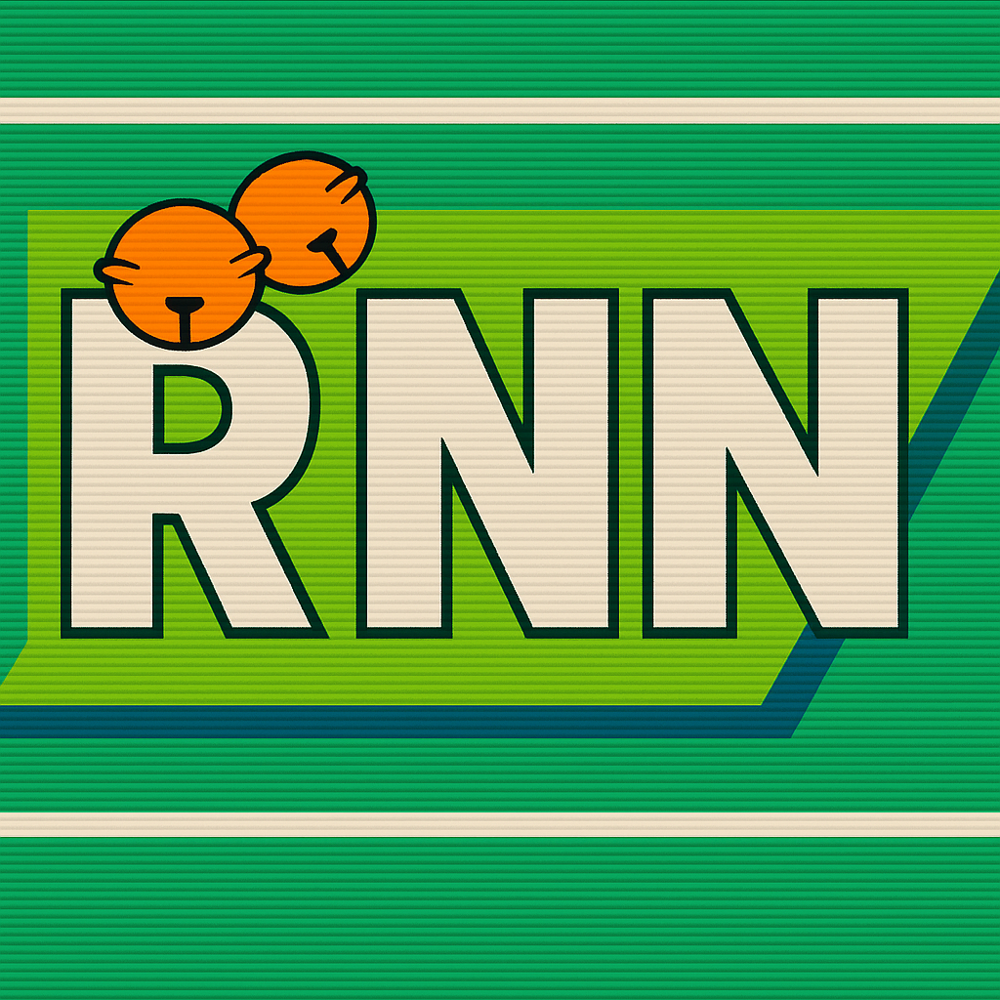
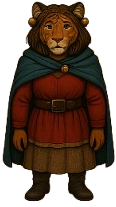

The Jungle Sees All · Broadcast from the Spirit-Walker Longhouse


A new RNN broadcast is cut every week that applicable new events exist.
When a session is filed into data/events.json or the
Recent Adventures feed, run
python3 tools/build-rnn-broadcast.py, write the new script into
tools/rnn-scripts/, and the newest episode becomes “last week” at the
top of the READMEs.
Broadcast frames composited live from Reputation-Matrix2/animation_frames/.
Episode data generated — into
Reputation-Matrix2/data/rnn-broadcasts.js.
Trust only the claw. Fear only the silence. This missive will self-destruct if eaten.